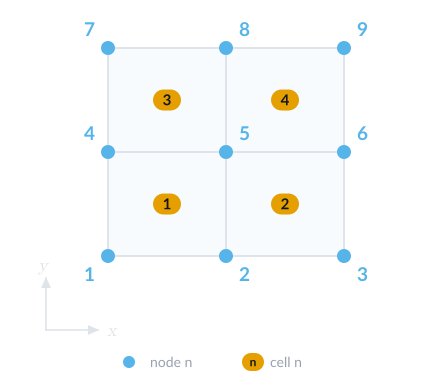

Grid
Mesh reading
A Ferrite Grid can be generated with the generate_grid function. More advanced meshes can be imported with the FerriteMeshParser.jl (from Abaqus input files), or even created and translated with the Gmsh.jl and FerriteGmsh.jl package, respectively.
FerriteGmsh.jl
FerriteGmsh.jl supports all defined cells with an alias in Ferrite.jl as well as the 3D Serendipity Cell{3,20,6}. Either, a mesh is created on the fly with the gmsh API or a mesh in .msh or .geo format can be read and translated with the FerriteGmsh.togrid function.
FerriteGmsh.togrid — Function
togrid(filename::String; domain="")Open the Gmsh file filename (ie a .geo or .msh file) and return the corresponding Ferrite.Grid.
togrid(; domain="")Generate a Ferrite.Grid from the current active/open model in the Gmsh library.
FerriteGmsh supports currently the translation of cellsets and facetsets. Such sets are defined in Gmsh as PhysicalGroups of dimension dim and dim-1, respectively. In case only a part of the mesh is the domain, the domain can be specified by providing the keyword argument domain the name of the PhysicalGroups in the FerriteGmsh.togrid function.
Reading a .msh file is the advertised way, since otherwise you remesh whenever you run the code. Further, if you choose to read the grid directly from the current model of the gmsh API you get artificial nodes, which doesn't harm the FE computation, but maybe distort your sophisticated grid operations (if present). For more information, see this issue.
If you want to read another, not yet supported cell from gmsh, consider to open a PR at FerriteGmsh that extends the gmshtoferritecell dict and if needed, reorder the element nodes by dispatching FerriteGmsh.translate_elements. The reordering of nodes is necessary if the Gmsh ordering doesn't match the one from Ferrite. Gmsh ordering is documented here. For an exemplary usage of Gmsh.jl and FerriteGmsh.jl, consider the Stokes flow and Incompressible Navier-Stokes Equations via DifferentialEquations.jl example.
FerriteMeshParser.jl
FerriteMeshParser.jl converts the mesh in an Abaqus input file (.inp) to a Ferrite.Grid with its function get_ferrite_grid. The translations for most of Abaqus' standard 2d and 3d continuum elements to a Ferrite.AbstractCell are defined. Custom translations can be given as input, which can be used to import other (custom) elements or to override the default translation.
FerriteMeshParser.get_ferrite_grid — Function
function get_ferrite_grid(
filename;
meshformat=AutomaticMeshFormat(),
user_elements=Dict{String,DataType}(),
generate_facetsets=true
)Create a Ferrite.Grid by reading in the file specified by filename.
Optional arguments:
meshformat: Which format the mesh is given in, normally automatically detected by the file extensionuser_elements: Used to add extra elements not supported, might require a separate cell constructor.generate_facetsets: Should facesets be automatically generated from all nodesets?
If you are missing the translation of an Abaqus element that is equivalent to a Ferrite.AbstractCell, consider to open an issue or a pull request.
Grid datastructure
In Ferrite a Grid is a collection of Nodes and Cells and is parameterized in its physical dimensionality and cell type. Nodes are points in the physical space and can be initialized by a N-Tuple, where N corresponds to the dimensions.
n1 = Node((0.0, 0.0))Cells are defined based on the Node IDs. Hence, they collect IDs in a N-Tuple. Consider the following 2D mesh:


The cells of the grid can be described in the following way
cells = [ Quadrilateral((1, 2, 5, 4)), Quadrilateral((2, 3, 6, 5)), Quadrilateral((4, 5, 8, 7)), Quadrilateral((5, 6, 9, 8)),]where each Quadrilateral <: AbstractCell is defined by the tuple of node IDs. Additionally, the data structure Grid contains node-, cell-, facet-, and vertexsets. Each of these sets is defined by a Dict{String, OrderedSet}.
Node- and cellsets are represented by an OrderedSet{Int}, giving a set of node or cell ID, respectively.
Facet- and vertexsets are represented by OrderedSet{<:BoundaryIndex}, where BoundaryIndex is a FacetIndex or VertexIndex respectively. FacetIndex and VertexIndex wraps a Tuple, (global_cell_id, local_facet_id) and (global_cell_id, local_vertex_id), where the local IDs are defined according to the reference shapes, see Reference shapes.
The highlighted facets, i.e. the two edges from node ID 3 to 6 and from 6 to 9, on the right hand side of our test mesh can now be described as
boundary_facets = [(3, 6), (6, 9)]i.e. by using the node IDs of the reference shape vertices.
The first of these can be found as the 2nd facet of the 2nd cell.
julia> Ferrite.facets(Quadrilateral((2, 3, 6, 5)))((2, 3), (3, 6), (6, 5), (5, 2))The unique representation of an entity is given by the sorted version of this tuple. While we could use this information to construct a facet set, Ferrite can construct this set by filtering based on the coordinates, using addfacetset!.
AbstractGrid
It can be very useful to use a grid type for a certain special case, e.g. mixed cell types, adaptivity, IGA, etc. In order to define your own <: AbstractGrid you need to fulfill the AbstractGrid interface. In case that certain structures are preserved from the Ferrite.Grid type, you don't need to dispatch on your own type, but rather rely on the fallback AbstractGrid dispatch.
Example
As a starting point, we choose a minimal working example from the test suite:
struct SmallGrid{dim, N, C <: Ferrite.AbstractCell} <: Ferrite.AbstractGrid{dim} nodes_test::Vector{NTuple{dim, Float64}} cells_test::NTuple{N, C}endHere, the names of the fields as well as their underlying datastructure changed compared to the Grid type. This would lead to the fact, that any usage with the utility functions and DoF management will not work. So, we need to feed into the interface how to handle this subtyped datastructure. We start with the utility functions that are associated with the cells of the grid:
Ferrite.getcells(grid::SmallGrid) = grid.cells_testFerrite.getcells(grid::SmallGrid, v::Union{Int, Vector{Int}}) = grid.cells_test[v]Ferrite.getncells(grid::SmallGrid{dim, N}) where {dim, N} = NFerrite.getcelltype(grid::SmallGrid) = eltype(grid.cells_test)Ferrite.getcelltype(grid::SmallGrid, i::Int) = typeof(grid.cells_test[i])Next, we define some helper functions that take care of the node handling.
Ferrite.getnodes(grid::SmallGrid) = grid.nodes_testFerrite.getnodes(grid::SmallGrid, v::Union{Int, Vector{Int}}) = grid.nodes_test[v]Ferrite.getnnodes(grid::SmallGrid) = length(grid.nodes_test)Ferrite.get_coordinate_eltype(::SmallGrid) = Float64Ferrite.get_coordinate_type(::SmallGrid{dim}) where {dim} = Vec{dim, Float64}Ferrite.nnodes_per_cell(grid::SmallGrid, i::Int = 1) = Ferrite.nnodes(grid.cells_test[i])These definitions make many of Ferrite functions work out of the box, e.g. you can now call getcoordinates(grid, cellid) on the SmallGrid.
Now, you would be able to assemble the heat equation example over the new custom SmallGrid type. Note that this particular subtype isn't able to handle boundary entity sets and so, you can't describe boundaries with it. In order to use boundaries, e.g. for Dirichlet constraints in the ConstraintHandler, you would need to dispatch the AbstractGrid sets utility functions on SmallGrid.
Topology
Ferrite.jl's Grid type offers experimental features w.r.t. topology information. The functions getneighborhood and facetskeleton are the interface to obtain topological information. The getneighborhood can construct lists of directly connected entities based on a given entity (CellIndex, FacetIndex, FaceIndex, EdgeIndex, or VertexIndex). The facetskeleton function can be used to evaluate integrals over material interfaces or computing element interface values such as jumps.